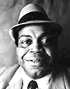
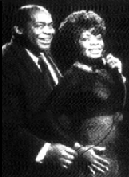

 Уилли Диксон - коренная фигура чикагского блюза. Если Мадди Уотерс - король, то Уилли Диксон - “серый кардинал”. Так уж получилось в ходе исторического процесса формирования чикагского блюза, что выпало Диксону держаться в тени, за кулисами, незаметно для публики, выполняя важнейшую работу. Это именно Диксон написал большинство золотых стандартов для блюзовой песенной сокровищницы (см.приложение), включая главный блюзовый гимн - Hoochie Coochie Man. Ему обязаны лучшими записями (за сами песни, за аранжировки и подбор студийных музыкантов,) Bo Diddley, Sonny Boy Williamson II, Little Walter, Otis Rush, Koko Taylor и, конечно же, две головы чикагского державного блюзового орла (прошу всех встать): Muddy Waters и Howlin’ Wolf (прошу садится). По сию пору, спустя 30-40 лет от сочинения, диксоновские блюзы - наиболее часто исполняются и записываются в блюзовом мире. Влияние Диксона распространилось и за пределы блюзового мира. Back Door Man вопил от души Jim Morrison (Doors); Little Red Rooster и I Just Want To Make Love To You уже 35 лет как в репертуаре Rolling Stones; co Spoonfull началась история Cream; I Can’t Quit You Baby и You Shook Me послужили фундаментом heavy-блюза Led Zeppelin (Причем Page-The-Wallet, скупой, позабыл указать Диксона автором Whole Lotta Lovin’, за что потом отдувался в суде: Whole Lotta Love = You Need Love - переработка текста.)... Короче, любой достойный музыкант учился року по блюзам Уилли Диксона.При личной встрече никто бы не назвал Диксона серой незаметной персоной: огромная улыбка, огромная лысина - здоровяк весом более центнера и ростом под два метра (Смотришь на его фотографию 1960г., сделанную во время гастролей по Израилю, где он верхом на верблюде, - и полное впечатление, что они катают друг дружку поочереди.). Нормальная гитара в его руках казалась бы игрушечной юкелеле. Диксон вынужден был взять в руки контрабас, просто чтобы не выглядеть смешным на сцене. Вот это был как раз его размерчик! Диксон руками прощупал фундамент блюза. Блюзовой сутью он и так пропитан был с рождения... Он с Юга, город Уиксбург, штат Миссиссиппи. “Мой старик все время в поле пел блюзы. Он так много говорил о блюзах и различиях в музыке и всем таком, что увлек меня ими с самого раннего детства,” - писал Диксон в своей автобиографии под скромным названием I am the Blues (Аз есмь Блюз). Рос в нищете. Отец был какой-то полубандит, нигде не появлявшийся без двух наганов за поясом (Один - это для пацанов; не серьезно!). “Стоило нам в школе начать гулять с какой-нибудь girl, отец подходил к нам и говорил: ”Чего тебе от нее надо?.. Нельзя. Она тебе наполовину сестра,” - вспоминал брат Уилли Диксона. Отец появлялся в его жизни лишь время от времени, с матерью же жил-поживал другой мужчина, которого Диксон в мемуарах называет “мой старик”. Мать произносила нараспев рифмованные речи (рэп да и только!): религиозные проповеди или поучения, как надо хорошо себя вести. Диксон перенял это умение рифмовать на любую тему. Он не тверд был в грамоте и чистописании, но с детства записывал в маленькую черную книжечку свои вирши, некоторые из которых в начале 30х ему удалось продать профессиональным музыкантам как тексты для песен. Так он узнал, что шоу-бизнес - легкий заработок. Привычен же был с детства заработок тяжелый. Диксон чуть не с пеленок работал в поле. Вместо школы выжигал и продавал древесный уголь. Выращивал на продажу чеснок. А и воровал по мелочи. За что угодил в детское исправительное заведение. С потоком черных безработных в годы Великой Депрессии отправился на промышленный Север, в Чикаго. Голодные мигранты добирались туда, как могли: либо пешком, либо зайцами на товарняках. В начале лета полиция южных штатов отлавливала таких “зайцев” и направляла в “сельские тюрьмы” - на фермы. Срок всегда был - до окончания сельскохозяйственных работ. К зиме голодного и без денег бесплатного батрака выбрасывали на улицу (Зачем кормить его зимой, если весной можно новых наловить - сколько нужно будет). Диксон оказался среди тех, кто попался. И на этот раз попал он в далеко не детское учреждение... У него на глазах надсмотрщики забили насмерть одного из “штрафников”. И сам Диксон получил в тот день удар по голове такой, что “два года ходил как глухой”. Через голод и унижения Уилли Диксон вырос не рабом, а гордецом. Освоив гражданские права афро-американцев на практике, он понял, что что, если не поплывет по бесправному течению, то единственное право, которое он может получить: ни на кого не полагаться и не от кого не зависеть - полная самостоятельность во всем. В 20 лет это был закаленный боец. Что подтверждают напрямую “Золотые перчатки” Чикаго 1937г. - главный приз за победу в полутяжелом весе среди боксеров-любителей. Как пианист Champion Jack Dupree и (по слухам) Blind Lemon Jefferson, Диксон - музыкант с профессиональным боксерским прошлым. Светлые дни детства и юношества, которые Диксон припоминает в своей автобиографии - это те, что связаны с музыкой... С пением в церковных хорах и маленьких вокальных ансамблях, сопровождавших странствующих проповедников... Один из таких ансамбликов, в котором пел Диксон, вел собственную еженедельную радиопрограмму в городе Виксбург (Миссиссиппи). Добравшись до родственников в Чикаго, Диксон первым делом нашел для души и мелкого приработка такой ансамбль госпелл, а потом уж пошел на ринг (прикидывая свои возможности в профессиональном боксе, Диксон одно время даже был в спаринг-партнером великого Джо Луиса). Но музыка победила - перчатки проиграли. Пианист и певец Leonard “Babu Doo” Caston, коллега по религиозному вокальному ансамблю, убедил Диксона стать музыкантом, а не боксером, сладил ему контрабас и научил играть. Вдвоем они возглавили эстрадный коллективчик “The Five Breezes”. “Пять бризов” только-только начали обретать известность в Чикаго, в 1941г. сделали свои первые записи, как Диксон оказался персоной нон-грата. Ему пришла повестка, но он отказался помагать Соединенным Штатам и их президенту. Не надо думать, что он был за дядю Адольфа. Он о нем тогда ничего еще не знал. Зато точно знал, что Соединенные Штаты и их президент палец о палец не ударили, чтобы помочь ему выжить, только при каждом удобном случае пытались что-то из него выжать. И что теперь - отправляться за море, чтобы отдать за них жизнь? С какой стати?! Власти попробовали воспользоваться известность Уилли Диксона, дабы продемонстрировать, кто здесь чьей жизнью распоряжается. Диксон был арестован прямо на сцене, во время клубного концерта - за уклонение от призыва. Его пример должен был послужить другим - наукой. Но власти просчитались - не на того напали. “Меня судили, и я сказал, что не чувствую долга отправляться на войну, поскольку условия, в которых живет мой народ, делали меня не гражданином, а субъектом. На нескольких судебных разбирательствах я повторял: ”Зачем мне работать на или защищать того, кто убивает мой народ?” После тех условий, в которых меня заставили жить, какого черта мне было за них умирать? Месяцев десять меня то и дело сажали в тюрьму. Держали на хлебе и воде. Раз 30-40 таскали в суд. Я ссылался на 14ю и 15ю поправки к конституции. Мне заявляли, что меня кто-то подучил. Но свое образование я получил на шоссе. Даже моей матери отправили письмо, рассказали ей, как это не хорошо, что я не иду в армию. В конце концов в газете написали, что я получил пять лет тюрьмы и штраф в 10.000$, но на самом деле меня выпустили на следующий день, потребовав, чтобы я помалкивал. Мне дали подписать какую-то бумагу и присвоили шифр 5-F. Я не знал, что это такое, да и никто этого не знал. Я так думаю, что они решили отпустить меня восвояси, поскольку очень многие из моего народа стали прислушиваться ко мне и готовы были повторять за мной. И поскольку я вызвал слишком много шума, они решили притушить скандал. “Мы не хотим, чтобы ты служил в наших войсках, поскольку ты будешь оказывать плохое влияние на других,”- сказали мне. Если бы в этой стране со мной обходились бы как следует, я бы пошел. Я бы скорее пошел в армию сейчас, чем тогда, поскольку многое изменилось к лучшему” - говорил Диксон в 1989г. Из этой передряги Диксон и вышел, в общем, легко отделавшись. Но музыкальная его карьера прервалась на несколько лет. Кастон, пока партнер отсиживался в тюрьме, собрал новое трио и отправился с ним на гастроли по офицерским клубам боевых частей. Диксон следующую запись сделал только в 1945м, с группой The Four Jumps Of Jive. Однако, едва Кастон вернулся в Чикаго, они снова объединились. The Big Trio - их новый ансамбль при участиии гитариста Bernardo Dennis, которого сменил Ollie Crawford - исполнял блюзы только в самой мягкой модификации, танцевальные буги, шлягеры и юмористические песенки. Сказать прямо, это был негритянский попс. Зато - сразу контракт с ведущей фирмой грамзаписи того времени - Columbia. Диксон не выходил из блюзового круга в личной жизни. После поп-концертов он джемовал с Мадди Уотерсом и его друзьями. На одном из таких джемов, в 1948г., его представили братьям Чесс, владельцам известного “черного” клуба и новой фирмы грамзаписи, названной в собственную честь CHESS. Чессы просили заходить в студию, где всегда найдется работа для бассиста. Диксон впервые попал в гонорарный лист Chess как акомпаниатор на записи Robert Nighthawk в том же 1948г. И с тех пор стал заходить туда все чаще и чаще. Окончание сороковых знаменовалось в личной жизни Диксона достижением трех сотен фунтов живого веса и женитьбой на Элионоре Фрэнклин. В творческом плане он стал ощущать себя неуютно в Big Trio, преуспевавшем в коммерческом отношении. Он более не чувствовал себя частью такой музыки. Мир Chess, где он уже становился ключевой фигурой, волекал его все глубже. Диксон подыскивал музыкантов-акомпаниаторов на запись. Разрабатывал аранжировки. Мыл пол. Ругался с Чессами из-за денег. Но пользовался их доверием во всех творческих вопросах. Кастон стремился в The Big Trio к мейнстримовому поп-звучанию, чуть приукрашенному джазовыми красками. Песни Диксона не подходили Trio по стилистике. Зато для Chess это было то, что нужно. Артисты, группировавшиеся вокруг фирмы, создавали городской электрофицированный блюз, крепко уходящий корнями в блюз деревенский. И Диксон в студии Чесс все чаще оказывался не только акомпаниатором, но и автором песни, и аранжировщиком. В 1953г. он выпустил несколько сорокопяток в качестве солиста. Леонард Чесс не очень-то поощрял эти пробы. Легенды об интуиции основателя Chess находят подтверждение и в случае с Диксоном. Он словно подталкивал Диксона к роли главного блюзового стратега фирмы, скрывающегося от публики за кулисами. Диксон писал песни, продолжающие черную деревенскую мифологию - о талисманах, предсказателях будущего и покорителях женщин - но аранжировал их по городскому, созвучно новому времени и месту. Он воплощал культуру черной Америки - в грозные или игривые - электрические - песни. Настоящая слава приходит к Диксону в 1954г. Чередой из под его пера выходит ряд этапных для блюза мелодий, которые становятся популярными в записи Мадди Уотерса (Hoochie Coochie Man), Хаулин Вулфа (Evil), Литл Уолтера (Mellow Dawn Easy). В студиях Чесс Уилли Диксон становится тем самым человеком, который ответственен за все! Он был продюссором на записи, аранжировщиком, искателем новых талантов. И он сочинял гениальные блюзы. В его авторском каталоге - более 500 песен. Когда Чесс отказались принять Отиса Раша, которого Диксон считал будущей звездой, Диксон ушел на другой чикагский лейбл - Cobra (сотворчествуя с Otis Rush, Magic Sam и Buddy Guy с 1957 по 1959гг). Однако не мог без Chess, которым отдал большую и наиболее значительную часть своей музыкальной карьеры, вместе с фирмой поднявшись к звездной славы, а затем пережив ее долгое и нудное угасание,- и вернулся. В 60-х Диксон собирал для гастролей по Европе блюз-ревю под названием American Folk Blues Festival, в котором выступали все звезды блюза: T-Bone Walker, John Lee Hooker, Memphis Slim и многие-многие другие... Тогда же он организовал большой блюз-бэнд The Chicago Blues All Stars, который, меняясь в составе, существует по сей день. (В первом составе играли Johnny Shines, вок.,гит.; Sunnyland Slim, ф-но; Walter “Shakey” Horton, гарм.; Clifton James - бар.) В 1980г. имя Диксона внесено в зал славы Blues Foundation. В 1982г. Диксон открыл собственную блюз-благотворительную компанию Blues Heaven Foundation - на доходы от своих авторских гонораров. Фонд существует и поныне, выполняя намеченную Диксоном программу: выплачивает пособие престарелым блюзмэнам, организует по школам блюзовые уроки (blues-in-schools) и платит степендии подающим надежды блюзовым талантам. В 1985г. Диксон пишет песню Why Can’t We Make Peace - Почему мы не умеем делать мир? You’ve made great planes to span the skies, gave sight to the blind with other men’s eyes. You’ve made submarines submerged for weeks, but it don’t make sence if we can’t make peace. You go to the moon and come back thrilled You take one man’s heart and make another man live. We can crash any country in a matter of weeks - don’t make sence ‘couse we can’t make peace. Ты построил громадные самолеты, чтобы бороздить небеса, Подарил зрение слепым через глаза других людей. Сделал подводные лодки, погружающиеся на многие месяцы - но какой в том смысл, если мир ты делать не умеешь. Ты побывал на Луне и вернулся потрясенный, Ты брал сердце у одно, чтобы дать жить другому. Мы можем сокрушить любую страну - это дело нескольких недель. Но нет в этом проку - если не умеешь делать мир. Запись песни он выслал г-ну Рейгану и сенаторам. Те не нашли времени ответить. В 1989м Диксон записывает свой последний альбом Hidden Charms, отмеченный Grammy, и прекращает гастрольную деятельность, лишь изредка давая клубные концерты в Чикаго. Уилли Диксон умер в 1992 году от сердечной недостаточности. Ушел один из последних титанов чикагского блюза. Что слушать?Willie Dixon. The Chess Box (MCA/Chess), конечно. На двух компактах здесь собраны золотые блюзы Уилли Диксона как в авторском исполнении, так и в записи всех чессовских звезд: Muddy, Walter, Wolf, Sonny Boy, Bo... Замечательный буклет с картинками... Учтите только, что всякий нормальный любитель блюза рано или поздно захочет собрать “чессовские” коробки вышепоименованных, а на них - услышит снова те же песни. (Да, кстати, в Москве не покупайте эту коробочку дороже 34$. Это беспредел! Можно купить и за 24$. Не поощряйте бандитов от музторговли, потерявших совесть.) Послушать песни Диксона в авторском исполнении и записи, в которых он принимал участие как контрабасист, можно было в скрупулезном сборнике фирмы Charly: A Tribute To Willie Dixon: 1915-1992. Но с тех пор, как MCA отсудили у Charly права на издание записей Chess, Charly объявили себя банкротами. И вряд ли стоит теперь ждать, что допечатают тираж этого солидного сборника. Вместо него MCA/Chess предлагают теперь более короткий (но, нужно признать, более качественный по звуку) сборник Willie Dixon: The Original Wang Dang Doodle. Здесь есть и главное - чессовские записи; и одна из прощальных записей The Big Trio; и соло Диксона под гитару Weak Brain Narrow Mind (Слаб умом и недалек мыслями); и антивоенная его песня, запись которой он в 1981г. собственноручно рассылал американским сенаторам и всяческим президентам; и трек из его последнего альбома; и самая последняя запись от 1990 года: дуэт с контрабассистом Rob Wasserman. Одно “но”... На том экземпляре компакта, что лежит в моей коллекции, заявлено 14 песен, а имеется только 13. Отсутствует песня All The Time, про которую на обложке написано “previously unreleased”. Хочется добавить “И still is unreleased!” Зато в книжечке - большая статья видной историка и пропагандистки блюза Mary Katherine Aldin. Ну и, конечно, москвичи всегда могут съездить “на толпу” и купить за 35т “итальянцев” в серии Blues Encore: вполне добротная и обширная подробка, но -achtung!- качество звука может создать абсолютно неверное представление об обаянии диксоновского блюза. Это по сборникам. Что касается альбомов... В 1970 вышел альбом I Am The Blues (Columbia). На “злобу дня” он записан в heavy sound, дабы продемонстрировать рок-молодежи, кто же на самом деле автор любимых ею песен: Back Door Man, I Can’t Quit You, Baby, Spoonful, You Shook Me, Hoochie Coochie Man, Little Red Rooster... Это все - песни бывшие популярными в конце 60х в исполнении The Doors, Led Zeppelin, Cream, Steppenwolf, Rolling Stones... Получилось не столько тяжело, сколько тяжеловесно. Спорная работа, и явно не сам Диксон здесь распоряжался в студии, продюссировал запись. Hidden Charms (Silvertone)1989г.- был бы лебединной песнью, как последняя работа мастера. Но это не эллегия. Это вечно молодой блюз вечно молодого (в тот год ему было 74) блюзмэна. С ним в студии два чикагских ветерана: пианист Lafayette Leake и барабанщик Earl Palmer. На гармонике играет тогда еще малоизвестный Sugar Blue, ныне признанный виртуоз. Звучат как ставшие к тому времени уже золотыми блюзы Диксона эпохи Chess, так и новосочиненные. Здесь есть и легкая шаловливость, и неуклонная уверенность блюза. Блестящая работа. И редкий пример, когда премия Grammy вручена справедливо. Альбом долго не мог найти издателя. Счастье, что Диксон вообще успел увидеть его опубликованным.  Работу Диксона как автора великолепных блюзов, продюссора на записи со своим глубоко индивидуальным ярким саундом, контрабассиста и - иногда - со-лидер-вокалиста - можно оценть по достоинству, послушав альбом певицы Koko Taylor (чьим наставником был Уилли Диксон) - What It Takes (The Chess Years) (MCA/Chess).
В 1984г. Диксон вместе с J.Winter принимат участие в записи альбома харписта Sonny Terry “Whoopin’” (Alligator). Последнее. С чего не стоит начинать знакомство. Cуществует несколько бутлеговых записей выступлений Диксона с Уинтером - очень низкого качества, но весьма забавных. Оставьте их на потом. (Если вообще когда-нибудь их встретите - напишите нам.) И ни в коем случае не следует для первого знакомства слушать записи Уилли Диксона с The Big Trio. Просто потому, что это и мило и забавно, но ооооочень далеко от того, что есть суть диксоновский блюз. Приобретать эти записи для личной коллекции стоит только в серии Roots’n’Blues фирмы Sony/Columbia Legacy и только убедившись в своей безграничной любви к творчеству Уилли Диксона. Впрочем, истинный почитатель искусства блюза рано или поздно к такой любви придет. |